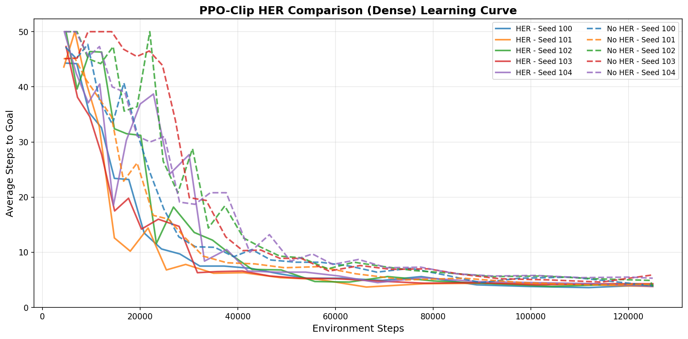
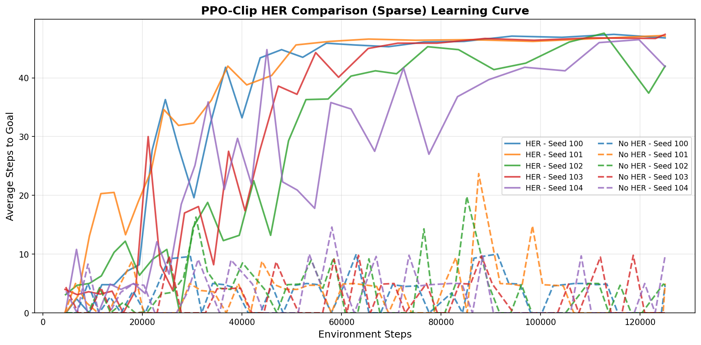

Final project for ECE1508 (Reinforcement Learning), University of Toronto, with Sherman Lin and Muhammad Saad Musani.
We evaluate TD3, SAC, and PPO-Clip with a custom on-policy HER on the FetchReach continuous-control task (Gym Robotics / MuJoCo): a 7-DoF Fetch Mobile Manipulator moving its end-effector to a randomly sampled target and holding position. Each algorithm is tested under:
A proportional (PID-style) controller is used as a deterministic baseline. All results are averaged over 5 random seeds.
Per the report's assertion of teamwork: I implemented and trained the PPO-Clip + HER agent; Sherman Lin implemented and trained TD3; Muhammad Saad Musani implemented and trained SAC.
The PPO piece specifically: an on-policy PPO-Clip agent (3-layer FC actor + critic) with a custom on-policy variant of Hindsight Experience Replay. Standard HER is designed for off-policy replay buffers. Here, failed trajectories are relabeled on-the-fly within the current batch (4 synthetic goals sampled per episode, only successful relabeled trajectories longer than 2 steps kept, capped at half the batch size), so the agent can still train fully on-policy while benefiting from HER's data augmentation under sparse rewards. Standard PPO without HER was also evaluated but wasn't competitive at any noise level or reward setting, so it's excluded from the results below.
Success rate and average steps-to-goal, averaged over 5 seeds:
| Agent | Dense | +Noise 0.01 | +Noise 0.05 | +Noise 0.1 |
|---|---|---|---|---|
| TD3 | 100%, 2.68 | 100%, 2.77 | 100%, 2.72 | 100%, 2.93 |
| SAC | 100%, 2.83 | 100%, 2.84 | 86%, 6.80 | 50%, 24.54 |
| PPO+HER | 100%, 2.98 | 100%, 2.74 | 100%, 3.22 | 100%, 3.48 |
| Agent (sparse) | Sparse | +Noise 0.01 | +Noise 0.05 | +Noise 0.1 |
|---|---|---|---|---|
| TD3 | 100%, 1.75 | 99.2%, 1.87 | 80%, 11.29 | 100%, 1.73 |
| SAC | 94%, 2.91 | 100%, 2.88 | 56%, 12.85 | 24%, 32.48 |
| PPO+HER | 96%, 4.96 | 100%, 3.28 | 62%, 21.1 | 76%, 15.22 |
The PID baseline reached 100% success in every setting but took ~6 steps on average, slower than every learned agent, as expected for a controller with no learned adaptation.
Comparing PPO-Clip with vs. without the custom on-policy HER. Under dense rewards both variants converge to similar performance, since the reward signal is already frequent enough that HER isn't essential:

Under sparse rewards the two diverge sharply: the HER runs climb steadily over training while the no-HER runs stay flat near their starting values the entire run. This visually matches the report's conclusion that HER was necessary for PPO-Clip to learn anything under sparse rewards.

Full methodology, architecture details, and the complete write-up are in the GitHub repo and the full report.